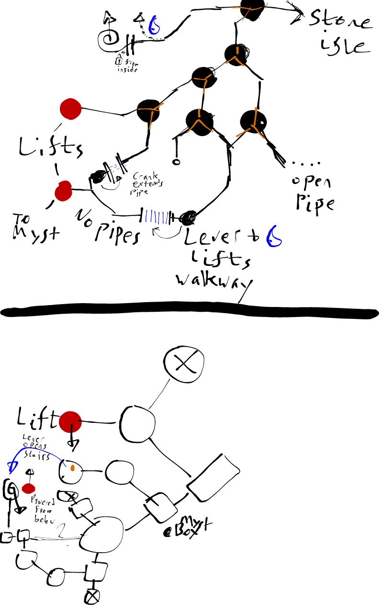

Myst
Table of Contents
Stoneship
Opening
Telescope
Telescope: Spike @ 114
Telescope: Lighthouse @ 135
Telescope: Spike @ 181 or 182
Telescope: Big Spike Cliff @ 305
Pumps
Left: Opens the Ship
Middle: Opens Stone halls
Right: Opens Lighthouse
Left Half-page
Marker Swit-- Isle-- The vault is loc-- the Island of N-- achieved very -- instructions are f-- each of the Marker -- Turn every one of -- "on" position. Th-- as a final step, tu-- there to th--
Mechanical
Opening hints
2:40
2,2,1
Audio Directions
North - Ping
West - Chirp
South - Tin Can
East - Spring
North - Pedestal Hints
| Cyan | Tri Rect Tri | – | – |
East - Pedestal Hints
| – | – | Tritri Moon | Semicircle |
Channelwood
Opening Hints
7,2,4
Routes

Figure 1: Channelwood Pipes
Right Half-page
--ch Vault Access --and of Myst --ated in very plain view on -- Myst, and access can be -- easily if the simple --ollowed. First, locate -- Switches on the island. -- these switches to the --en go to the dock and, --rn the Marker Switch --he "off" position.
Selenitic
Opening Hints
59 Volts
C1 C2 D#2 F2 A#1
Generators
| 10 | |
| 8 | 22 |
| 19 | |
Sound Generators
| Symbol | Sound | Position | Sequence |
|---|---|---|---|
| Obelisk in Water | Waves lapping, wind, blowglass | 15.0 | 1 |
| Water Drops into Water | Water Trickling | 153.4 | 2 |
| Gusty Hole | Heavy wind gusts | 212.2 | 3 |
| Steaming Crack / Chasm | Roar | 130.3 | 4 |
| Quarter Clock w/ Hands | Mechanical Gears / Bells | 55.6 | 5 |
Final Mechanisms
Page 158
| X | X | X | X | ||||
| X | X | X | X | X | |||
| X | X | X | X | ||||
| X | X | X | X | ||||
| X | X | X | X | ||||
| X | X | X | X | X | X |